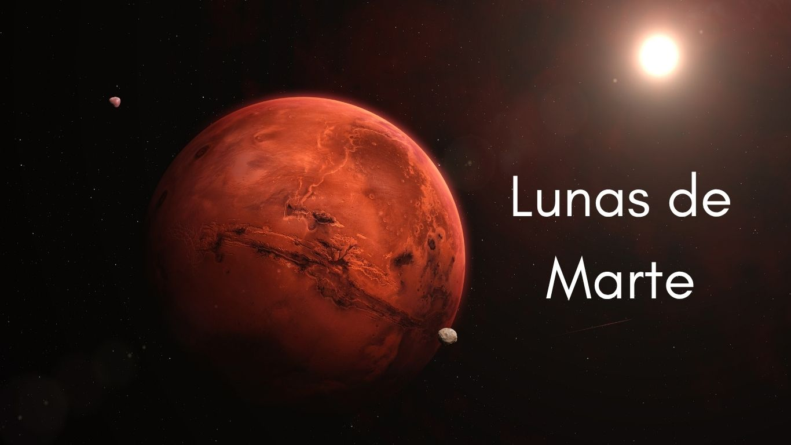
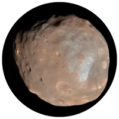
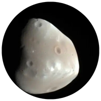

.png)
|
|



Marte, el famoso Planeta Rojo, no está solo en su viaje por el espacio. A diferencia de la Tierra y su enorme Luna, Marte cuenta con dos satélites naturales muy particulares: Fobos y Deimos.
A diferencia de lo que podrías imaginar, no son esferas brillantes y perfectas. De hecho, tienen un aspecto que recuerda mucho más a unas patatas espaciales.Ambas lunas fueron descubiertas en 1877 por el astrónomo estadounidense Asaph Hall y recibieron sus nombres de los gemelos de la mitología griega que acompañaban al dios de la guerra, Marte (Ares): Fobos (el miedo) y Deimos (el terror).
Fobos se está acercando a Marte a una velocidad de unos 1.8 metros cada cien años. Esto significa que, en unos 30 a 50 millones de años, Fobos terminará estrellándose contra Marte o, más probablemente, se fragmentará debido a la gravedad del planeta, creando un anillo alrededor de él.
Las lunas de Marte son de gran importancia para la exploración espacial por varias razones. En primer lugar, Fobos y Deimos pueden servir como plataformas para futuras misiones a Marte. Dado que estas lunas tienen una gravedad muy baja, sería más fácil y eficiente lanzar misiones desde su superficie en comparación con el lanzamiento desde Marte. Esto podría facilitar la exploración del espacio profundo y el envío de naves a otros planetas.
Además, el estudio de estas lunas puede proporcionar información valiosa sobre la historia del sistema solar. Al comprender cómo se formaron y evolucionaron Fobos y Deimos, los científicos pueden obtener pistas sobre la formación de otros cuerpos celestes y la dinámica de los planetas en nuestro sistema solar. La investigación sobre estas lunas también puede arrojar luz sobre la historia geológica de Marte y su evolución a lo largo del tiempo.